⚡Current Projects⚡
Movie Tracking Web Interface üéûÔ∏è
This project is my most notable one and the most massive as well. It is a full-stack web application that allows users to create their own accounts, interact with other users by following/unfollowing them and track movies that they've seen. This site has a collection of movies and each movie has statistics such as movie title, release year, actors, etc. It is the only project that can manage multiple users and handles the authentication of logging in and signup through sessions/secrets. Many other concepts are involved such as middleware, route handling and body parsers. The primary languages that are used are HTML, CSS, JavaScript and PUG (front-end framework similar to EJS). The only 2 major issue is that the movie data is hard-coded into the server and a database would need to be implemeneted (Looking towards MongoDB for that). The second issue is that the design of the website is very very basic and has to be worked on after a database is connected.
Github link for MovieTime Web Interface Project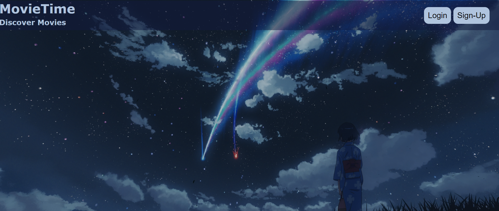 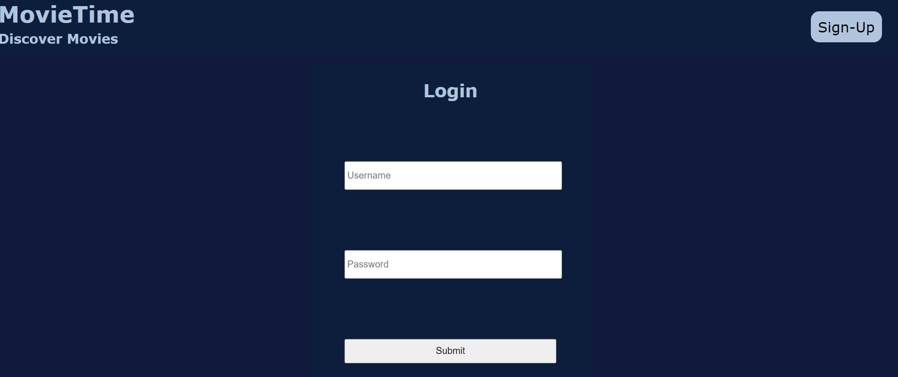 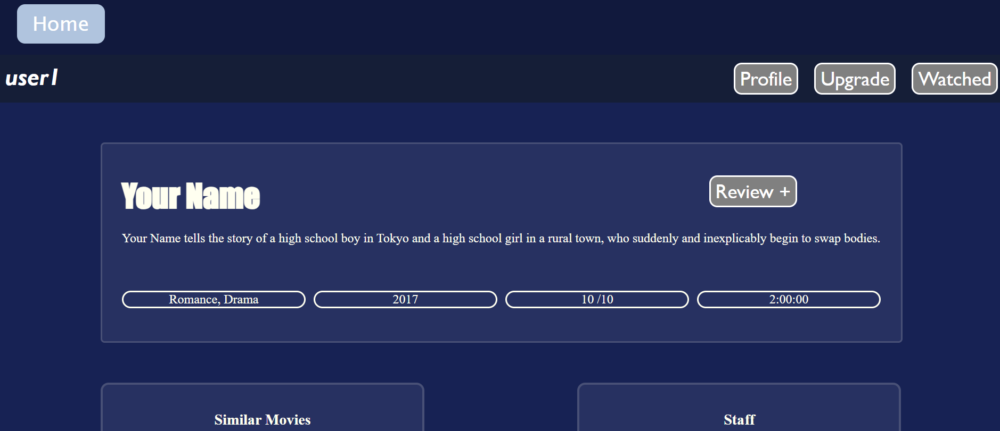 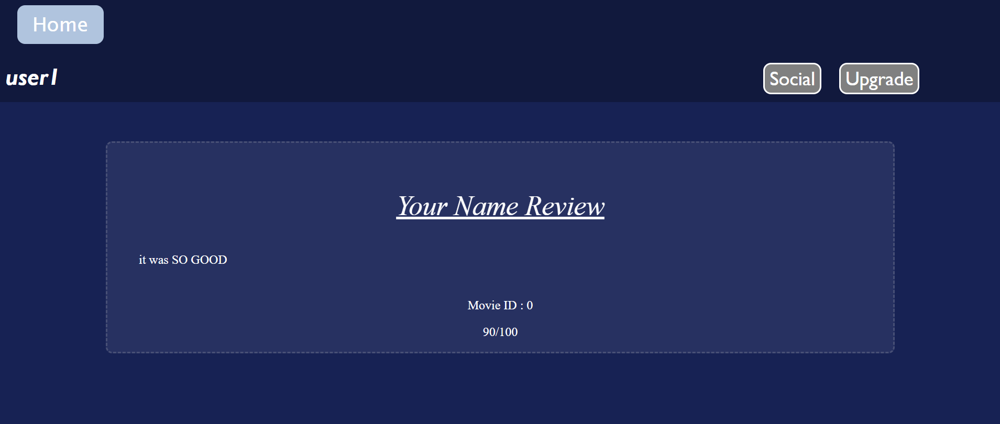
 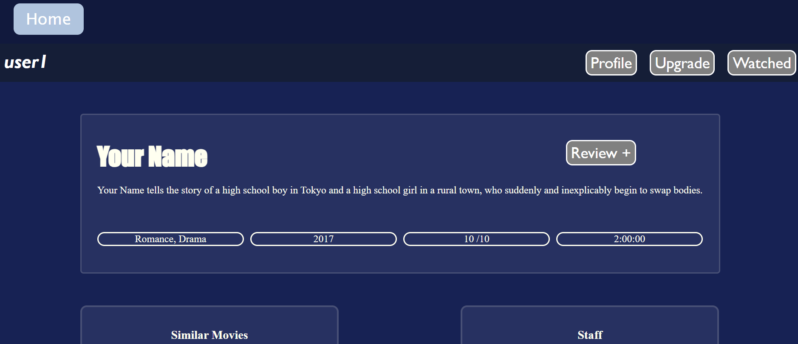
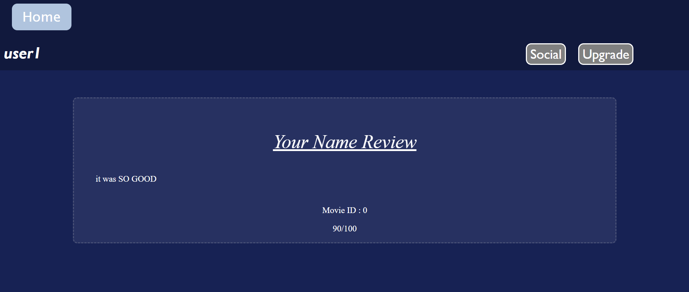
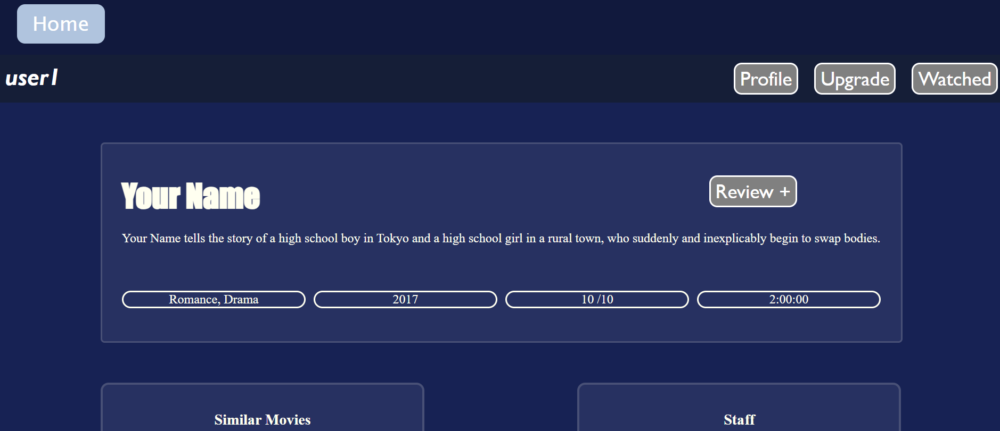
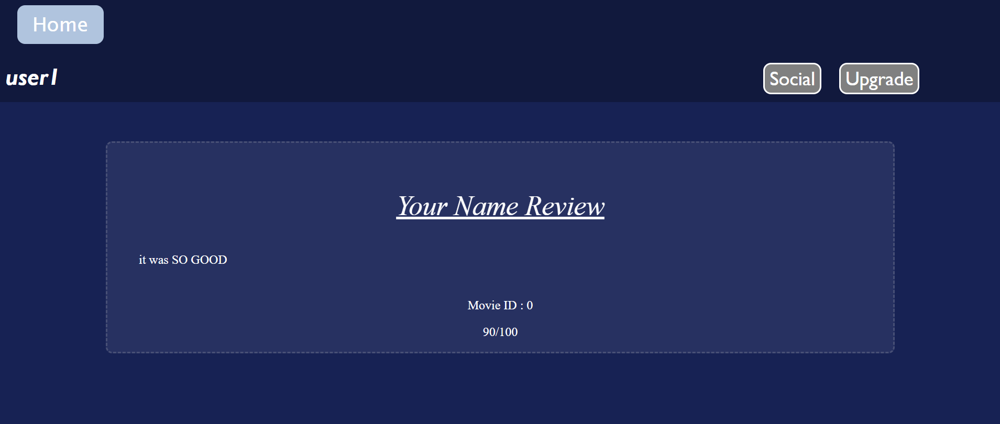
Anilist CSS Designs ⛩️
For this project I'll be going into depth in a little more background. I'm a huge fan of Anime and have been using this site named Anilist to track my progress. After a year or two of using this site, I realized I was able to customize my own page with CSS by using an external plugin/extension named Automail. The script for automail needed to be downloaded, along with the browser extension named TaperMonkey. So I switched from tinkering with after effects and photoshop for my biography to working on CSS designs. I created several different designs, which can be seen here and several of them also use more advanced css concepts such as animations, transitions and media tags. Link to the script is here -> Automail and link to the tapermonkey extension is here -> TaperMonkey. The designs haven't been added to github yet, but will be done soon.
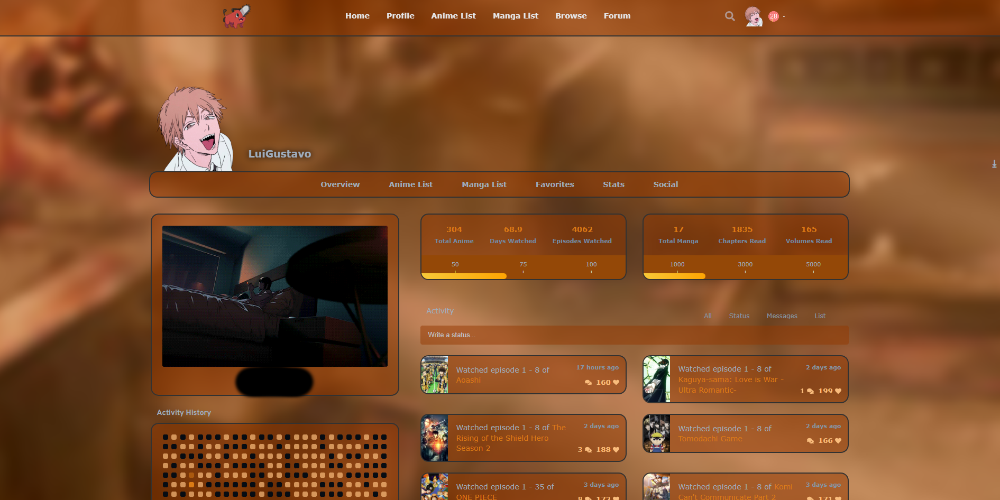 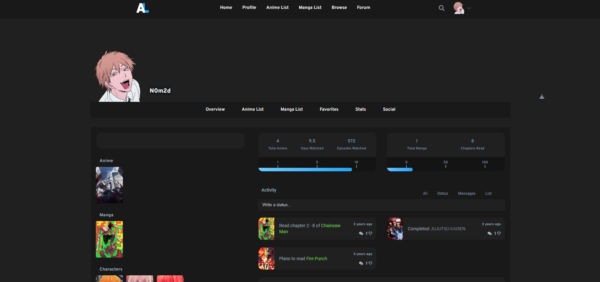 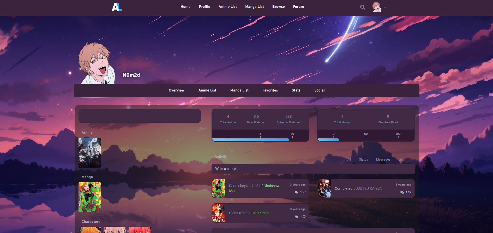
MongoDB Voting Submission üó≥Ô∏è
This project is to test out a voting submission for the best anime of the current year. The main focus point was to incorporate a database to keep the data of the optional anime that could be selected. MongoDB was chosen for this and I also used MongoDBCompass to view the data in an easier fashion. I wanted to ensure that no user could possibly be able to re-submit or spam the votes for any selection as this would clearly skew the results. Once the submission is made, the submit button will no longer function for the user and if they continue to persist by either clicking the back arrow or refreshing the page, they will be redirected to a page with a message indicating that they won't be able to submit again. A negative captcha was also implemented as an invisible user input to users, but only a bot would be able to see it and fill it out. This was made to help reduce spam from bots.
Github link for MongoDB Voting Submission Project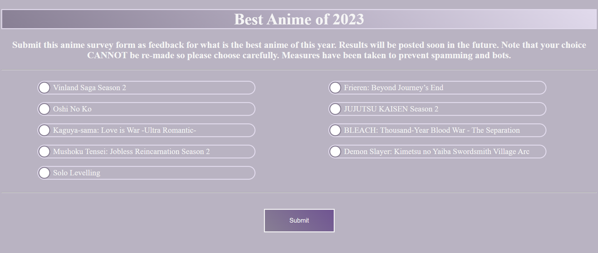
Excel Database üóÑÔ∏è
Maintaining an Excel Sheet database from User Input. The excel file initially has a column with various different values, and in my case I was using the database to track the jobs I was applying to. So the values included variables such as company name, city, job title, etc. A fairly simple project and the code will be linked from my github. The image below showcases an example of one of the data entries after the column width sizes were adjusted.
Github link for Excel Database Project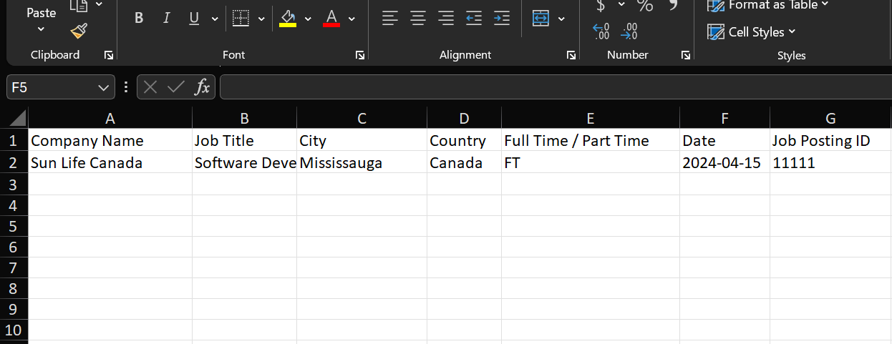